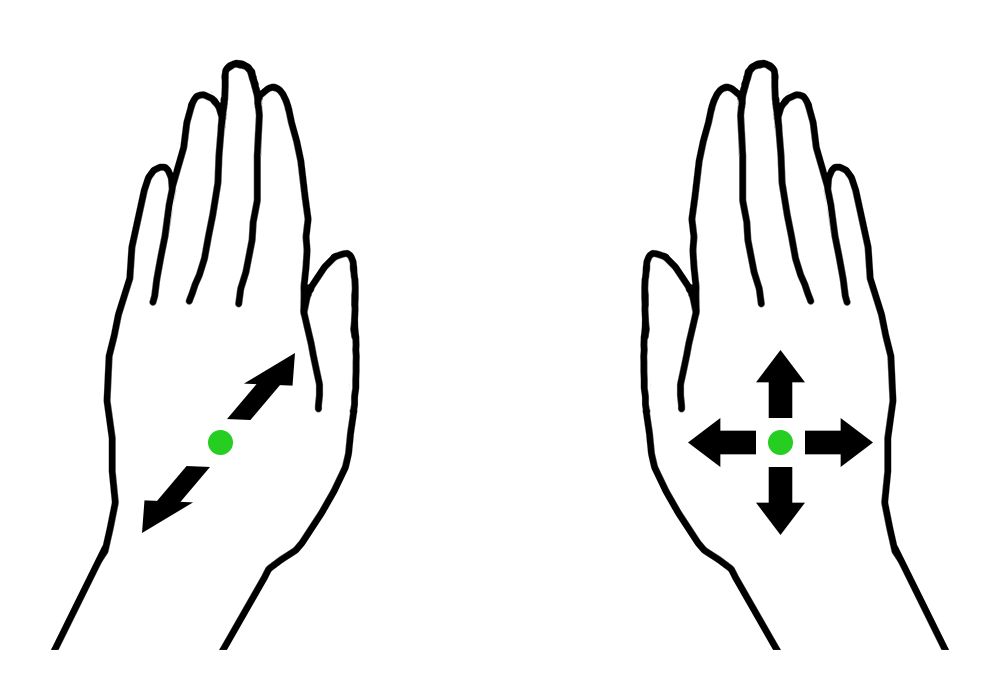

ist als Projektarbeit im 8. Semester meines Studiums an der Fachhochschule Stralsund entstanden. nexGEN META-DRONE ist ein Fork des Projekts meta_drone, welches von fünf Entwicklern während es MHacks V entwickelt wurde und dort im Bereich "Best Virtual Reality Hack" gewonnen hat. Mein Ziel war es die Steuerung und die Usebility zu verbessern.
Was du brauchst:
Was du tun musst:
node main.js
Die Meta 1 ist eine Augmented Reality (AR) Brille, durch die dem Träger eine noch natürlichere Steuerung des Quadrocopters Parrot Ar.Drone 2.0 ermöglicht wird.
|
Rechte Hand: Linke Hand: |
 |
Karsten SiedentoppStudent für Angewandte Informatik - Softwareentwicklung und MedieninformatikIch habe diese Steuerung im Rahmen meiner Projektarbeit im 8. Semester an der Fachhochschule Stralsund entwickelt. |